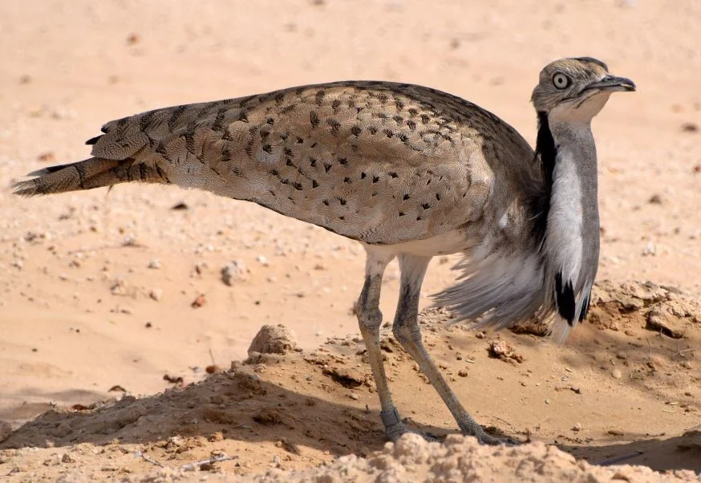

رحيل الألحان: حين تصمت بساتيننا The Departure of Melodies: When Our Orchards Fall Silent

البلبل العراقيThe Iraqi Bulbul
لم يعد البلبل العراقي يغرد كما كان في صباحات بغداد والبصرة؛ يواجه اليوم تهديدات وجودية من تجريف البساتين والصيد الجائر وموجات الجفاف الشديدة... The Iraqi Bulbul no longer sings as it once did in the mornings of Baghdad and Basra; it faces today existential threats from orchard clearing, illegal hunting, and severe droughts...
تعرّف على القصة كاملة ←Learn the Full Story → ⚠️ تهديد مرتفع جداًVery High Threat Level
دخلة البصرةBasra Reed Warbler
تعتبر دخلة البصرة "جوهرة الأهوار" بلا منازع؛ يحتضن العراق ما يقرب من ٩٠٪ من تعدادها العالمي... Known as the 'jewel of the marshes,' Iraq is home to nearly 90% of this species' entire world population...
تعرّف على القصة كاملة ←Learn the Full Story → ⚠️ مهدد بالانقراضEndangered
البط الرخاميMarbled Duck
طائر أنيق بريش منقّط يمنحه تمويهاً مثالياً بالمياه، ترتفع أعداده تهديداً عالمياً بسبب جفاف الأهوار وارتفاع الملوحة... An elegant, mottled-plumage bird whose global threat has risen due to wetland drying and rising salinity...
تعرّف على القصة كاملة ←Learn the Full Story → ⚠️ تهديد مرتفعHigh Threat Level
البط أبيض الرأسWhite-headed Duck
طائر مائي فريد يسهل تمييزه من خلال رأسه الأبيض ومنقاره الأزرق المنتفخ، يعد العراق محطة شتوية حيوية له... A distinctive waterbird recognized by its white head and swollen blue bill; Iraq is a vital wintering station...
تعرّف على القصة كاملة ←Learn the Full Story → ⚠️ حالة حرجة جداًCritically Endangered
الزقزاق الاجتماعيSociable Lapwing
أحد أكثر طيور العالم عرضة للخطر، يعيش بأسراب بسهوب العراق وبواديه المفتوحة، وأكبر تهديداته الصيد الجائر... One of the world's most endangered birds, gathering in flocks across Iraq's open steppes and plains...
تعرّف على القصة كاملة ←Learn the Full Story → ⚠️ حالة حرجة جداًCritically Endangered
أبو منجل الأصلع الشماليNorthern Bald Ibis
طائر أسطوري بتاريخ العراق، كان يعشش قديماً بمنحدرات جبال كردستان، وحالته الآن حرجة جداً وشبه منقرض محلياً... A near-legendary bird once nesting on Kurdistan's mountain cliffs, now critically endangered and locally near-extinct...
تعرّف على القصة كاملة ←Learn the Full Story → ⚠️ مهدد بالانقراضEndangered
النسر المصري (الرخمة)Egyptian Vulture
منظف طبيعي للبيئة، يتواجد بالمنحدرات الجبلية وحول القرى، وأكبر تهديداته التسمم الثانوي من الجيف المعالجة بيطرياً... Nature's own cleaner, found on mountain slopes near villages; its greatest threat is secondary poisoning from treated livestock carcasses...
تعرّف على القصة كاملة ←Learn the Full Story → ⚠️ تهديد منخفض عالمياًLow Global Threat Level
النسر الأسمرGriffon Vulture
رمز من رموز جبال كردستان الشاهقة، يعتمد على الطيران الانزلاقي بأجنحته الضخمة، وتهديده منخفض عالمياً لكنه يواجه ضغوطاً محلية... A symbol of Kurdistan's towering mountains, gliding on massive wings; globally low-risk but under local pressure...
تعرّف على القصة كاملة ←Learn the Full Story → ⚠️ قريب من التهديدNear Threatened
النسر الملتحيBearded Vulture
الأكثر انعزالاً بين النسور، يعيش بأقسى القمم الجبلية الثلجية بكردستان، ويواجه خطر اضطراب أعشاشه الصخرية النادرة... The most isolated of all vultures, living on Kurdistan's harshest snow-capped peaks, facing disturbance of its rare rocky nests...
تعرّف على القصة كاملة ←Learn the Full Story → ⚠️ مهدد بالانقراضEndangered
العقاب الأبقع الأكبرGreater Spotted Eagle
زائر شتوي مهيب للأهوار وضفاف الأنهار الكبرى، ارتفع تصنيفه مؤخراً لمهدد بالانقراض بسبب فقدان محطات الراحة أثناء الهجرة... A majestic winter visitor to Iraq's marshes and major riverbanks, recently uplisted to Endangered due to lost migration stopovers...
تعرّف على القصة كاملة ←Learn the Full Story → ⚠️ قريب من التهديدNear Threatened
البط أحمر العينFerruginous Duck
يختبئ ببحيرات صغيرة ومستنقعات هادئة محاطة بنباتات كثيفة، بلونه الكستنائي المميز، ويحتاج مراقبة مستمرة لضمان بقائه... Hiding in small lakes and calm, reed-fringed marshes, this chestnut-colored duck requires continuous monitoring to ensure its survival...
تعرّف على القصة كاملة ←Learn the Full Story → ⚠️ غير مهدد (LC)Least Concern (LC)
القطا المذنّبPin-tailed Sandgrouse
طائر أرضي مستوطن بسهول العراق الصحراوية الغربية، يعتمد بشدة على مصادر مياه دائمة يقصدها عند الفجر... A ground-dwelling resident of Iraq's western desert plains, relying heavily on permanent water sources visited at dawn...
تعرّف على القصة كاملة ←Learn the Full Story → ⚠️ غير مهدد (LC)Least Concern (LC)
القطا أسود البطنBlack-bellied Sandgrouse
يتميز ببطن أسود واضح أثناء الطيران، مستوطن بهضاب العراق وسهوله شبه الصحراوية، ويُستخدم تقليديًا كدليل على المياه الجوفية... Distinguished by a striking black belly in flight, resident across Iraq's semi-desert plateaus, and traditionally used as an indicator of nearby groundwater...
تعرّف على القصة كاملة ←Learn the Full Story → ⚠️ غير مهدد (LC)Least Concern (LC)
القطا المرقّطSpotted Sandgrouse
الأكثر تكيّفًا مع شح الماء بين أنواع القطا، مستوطن بالكثبان الرملية جنوب غرب العراق، وريشه المرقط يمنحه تمويهًا فائق الكفاءة... The most water-scarcity-adapted sandgrouse species, resident in the sand dunes of southwestern Iraq, with mottled plumage giving it exceptional camouflage...
تعرّف على القصة كاملة ←Learn the Full Story → ⚠️ معرّض للخطر (VU)Vulnerable (VU)
الحُبارىMacQueen's Bustard
طائر السهوب المتوّج ثقافياً وتراثياً، تتناقص أعداده بسبب الصيد الجائر وصيد الصقارة غير المنظم، قد يستحق تصنيف أعلى خطورة قريباً... The culturally revered bird of the steppe, its numbers declining from poaching and unregulated falconry hunting — possibly warranting an even higher threat classification soon...
تعرّف على القصة كاملة ←Learn the Full Story → ⚠️ قريب من التهديد (NT)Near Threatened (NT)
الحُبارى الصغرىLittle Bustard
زائرة عابرة أو شتوية بسهول العراق الزراعية، أصغر وأكثر اكتنازاً من الحبارى الكبرى، تتراجع أعدادها بفقدان الأراضي العشبية التقليدية... A passage or winter visitor to Iraq's agricultural plains, smaller and stockier than MacQueen's Bustard, declining with the loss of traditional grasslands...
تعرّف على القصة كاملة ←Learn the Full Story → ⚠️ غير مهدد (LC)Least Concern (LC)
الحجل الرمليSee-see Partridge
طائر أرضي مكتنز يفضل الجري على الطيران، مستوطن بالتلال الحجرية الجافة شمال وغرب العراق، ودوره غذائي مهم للثعالب والجوارح الصغيرة... A stocky ground bird that prefers running to flying, resident on the dry rocky hills of northern and western Iraq, and an important food source for foxes and small raptors...
تعرّف على القصة كاملة ←Learn the Full Story → ⚠️ غير مهدد (LC)Least Concern (LC).jpg)
الحجل (الشنار)Chukar Partridge
طائر صيد بري معروف بمرتفعات كردستان الصخرية، من أكثر طيور الحجل شيوعاً بالعراق، وله أهمية اقتصادية واجتماعية تقليدية... A well-known game bird of Kurdistan's rocky highlands, among the most common partridge species in Iraq, with traditional economic and social importance...
تعرّف على القصة كاملة ←Learn the Full Story → ⚠️ غير مهدد (LC)Least Concern (LC)
النورس أسود الرأسBlack-headed Gull
من أكثر النوارس انتشاراً بالعالم القديم، زائر شتوي بأعداد كبيرة على دجلة والفرات والأهوار، مؤشر على وفرة الموارد السمكية شتاءً... One of the most widespread gulls in the Old World, a large-scale winter visitor to the Tigris, Euphrates, and marshes — an indicator of winter fish abundance...
تعرّف على القصة كاملة ←Learn the Full Story → ⚠️ غير مهدد (LC)Least Concern (LC)
النورس الأبقعPallas's Gull
ثالث أكبر أنواع النوارس بالعالم، زائر شتوي لأهوار جنوب العراق، ووجوده الموسمي يعكس أهمية الأهوار كمحطة رئيسية بطريق الهجرة الآسيوي-الأفريقي... The third-largest gull species in the world, a winter visitor to southern Iraq's marshes, its seasonal presence reflecting their importance on the Asian-African flyway...
تعرّف على القصة كاملة ←Learn the Full Story →